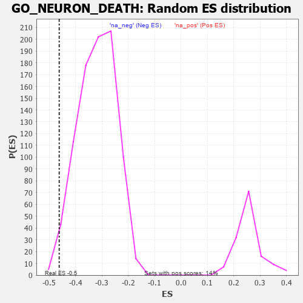

| | | Dataset | 7d |
| Phenotype | NoPhenotypeAvailable |
| Upregulated in class | na_neg |
| GeneSet | GO_NEURON_DEATH |
| Enrichment Score (ES) | -0.46183753 |
| Normalized Enrichment Score (NES) | -1.4471489 |
| Nominal p-value | 0.019744484 |
| FDR q-value | 0.24952881 |
| FWER p-Value | 1.0 |
Table: GSEA Results Summary
 Fig 1: Enrichment plot: GO_NEURON_DEATH
Fig 1: Enrichment plot: GO_NEURON_DEATH
Profile of the Running ES Score & Positions of GeneSet Members on the Rank Ordered List
| PROBE | GENE SYMBOL | GENE_TITLE | RANK IN GENE LIST | RANK METRIC SCORE | RUNNING ES | CORE ENRICHMENT | | 1 | TGFB3 | | | 49 | 2.654 | 0.0445 | No |
| 2 | TRIM2 | | | 100 | 1.628 | 0.0692 | No |
| 3 | GSK3A | | | 351 | 0.745 | 0.0518 | No |
| 4 | BAX | | | 387 | 0.711 | 0.0609 | No |
| 5 | LRP1 | | | 470 | 0.648 | 0.0629 | No |
| 6 | HTRA2 | | | 527 | 0.621 | 0.0676 | No |
| 7 | PITX3 | | | 594 | 0.596 | 0.0707 | No |
| 8 | ELK1 | | | 752 | 0.545 | 0.0612 | No |
| 9 | ZPR1 | | | 967 | 0.491 | 0.0434 | No |
| 10 | AKT1 | | | 1040 | 0.476 | 0.0434 | No |
| 11 | MEF2C | | | 1054 | 0.473 | 0.0508 | No |
| 12 | AIFM1 | | | 1072 | 0.469 | 0.0576 | No |
| 13 | FZD1 | | | 1574 | 0.379 | 0.0013 | No |
| 14 | BACE1 | | | 1673 | 0.360 | -0.0042 | No |
| 15 | HYOU1 | | | 1692 | 0.358 | 0.0003 | No |
| 16 | MSH2 | | | 1819 | 0.334 | -0.0093 | No |
| 17 | PAK3 | | | 1889 | 0.322 | -0.0119 | No |
| 18 | CREB1 | | | 2243 | 0.269 | -0.0515 | No |
| 19 | REST | | | 2308 | 0.259 | -0.0546 | No |
| 20 | HIPK2 | | | 2389 | 0.247 | -0.0601 | No |
| 21 | PIGT | | | 2450 | 0.236 | -0.0632 | No |
| 22 | CHP1 | | | 3089 | 0.138 | -0.1414 | No |
| 23 | TIGAR | | | 3091 | 0.138 | -0.1389 | No |
| 24 | PARP2 | | | 3316 | 0.103 | -0.1653 | No |
| 25 | TLDC2 | | | 3349 | 0.097 | -0.1675 | No |
| 26 | SARM1 | | | 3432 | 0.086 | -0.1762 | No |
| 27 | CDK5 | | | 3480 | 0.080 | -0.1807 | No |
| 28 | PIN1 | | | 3543 | 0.069 | -0.1872 | No |
| 29 | CBL | | | 3621 | 0.056 | -0.1959 | No |
| 30 | FIS1 | | | 3654 | 0.051 | -0.1990 | No |
| 31 | NF1 | | | 3713 | 0.040 | -0.2056 | No |
| 32 | HSF1 | | | 3718 | 0.039 | -0.2053 | No |
| 33 | DAXX | | | 3722 | 0.038 | -0.2050 | No |
| 34 | VPS35 | | | 3989 | -0.006 | -0.2386 | No |
| 35 | PARP1 | | | 4014 | -0.010 | -0.2414 | No |
| 36 | CSF1 | | | 4074 | -0.019 | -0.2485 | No |
| 37 | MTOR | | | 4114 | -0.025 | -0.2530 | No |
| 38 | ABL1 | | | 4125 | -0.027 | -0.2538 | No |
| 39 | AP2B1 | | | 4185 | -0.039 | -0.2605 | No |
| 40 | NRBP2 | | | 4274 | -0.055 | -0.2706 | No |
| 41 | LRRK2 | | | 4467 | -0.087 | -0.2933 | No |
| 42 | ILK | | | 4510 | -0.096 | -0.2968 | No |
| 43 | NTRK2 | | | 4543 | -0.104 | -0.2988 | No |
| 44 | GATA3 | | | 4614 | -0.120 | -0.3054 | No |
| 45 | SRPK2 | | | 4790 | -0.155 | -0.3246 | No |
| 46 | TERT | | | 4801 | -0.157 | -0.3229 | No |
| 47 | FBXW7 | | | 4816 | -0.161 | -0.3216 | No |
| 48 | CLU | | | 4889 | -0.174 | -0.3274 | No |
| 49 | PDPK1 | | | 5043 | -0.207 | -0.3428 | No |
| 50 | ITSN1 | | | 5094 | -0.222 | -0.3449 | No |
| 51 | ATM | | | 5210 | -0.249 | -0.3547 | No |
| 52 | SSH1 | | | 5254 | -0.258 | -0.3552 | No |
| 53 | GRIN1 | | | 5381 | -0.291 | -0.3656 | No |
| 54 | G6PD | | | 5638 | -0.358 | -0.3913 | No |
| 55 | CASP8 | | | 5678 | -0.369 | -0.3891 | No |
| 56 | ATG7 | | | 5858 | -0.420 | -0.4038 | No |
| 57 | SET | | | 5895 | -0.434 | -0.4001 | No |
| 58 | PPT1 | | | 6038 | -0.485 | -0.4088 | No |
| 59 | UBB | | | 6090 | -0.503 | -0.4057 | No |
| 60 | ROCK1 | | | 6152 | -0.520 | -0.4035 | No |
| 61 | EGR1 | | | 6165 | -0.527 | -0.3949 | No |
| 62 | GRID2 | | | 6170 | -0.528 | -0.3854 | No |
| 63 | THRB | | | 6178 | -0.531 | -0.3761 | No |
| 64 | CDC42 | | | 6236 | -0.548 | -0.3729 | No |
| 65 | CLN3 | | | 6580 | -0.699 | -0.4030 | No |
| 66 | GSK3B | | | 6719 | -0.768 | -0.4058 | No |
| 67 | TOX3 | | | 7150 | -1.033 | -0.4405 | Yes |
| 68 | GRN | | | 7319 | -1.194 | -0.4390 | Yes |
| 69 | KMO | | | 7432 | -1.308 | -0.4283 | Yes |
| 70 | CASP2 | | | 7442 | -1.322 | -0.4041 | Yes |
| 71 | KCNB1 | | | 7444 | -1.327 | -0.3789 | Yes |
| 72 | DCC | | | 7550 | -1.470 | -0.3642 | Yes |
| 73 | GRIK2 | | | 7552 | -1.471 | -0.3362 | Yes |
| 74 | BOK | | | 7715 | -1.817 | -0.3220 | Yes |
| 75 | CASP3 | | | 7747 | -1.902 | -0.2897 | Yes |
| 76 | GRIK5 | | | 7792 | -2.044 | -0.2562 | Yes |
| 77 | GRM4 | | | 7847 | -2.393 | -0.2173 | Yes |
| 78 | TRAF2 | | | 7861 | -2.481 | -0.1716 | Yes |
| 79 | FYN | | | 7881 | -2.622 | -0.1239 | Yes |
| 80 | ARRB1 | | | 7935 | -3.377 | -0.0662 | Yes |
| 81 | XIAP | | | 7947 | -3.696 | 0.0030 | Yes |
Table: GSEA details [plain text format]

Fig 2: GO_NEURON_DEATH: Random ES distribution
Gene set null distribution of ES for GO_NEURON_DEATH